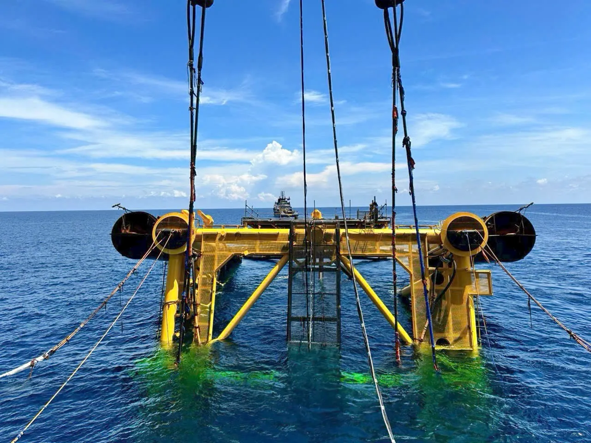
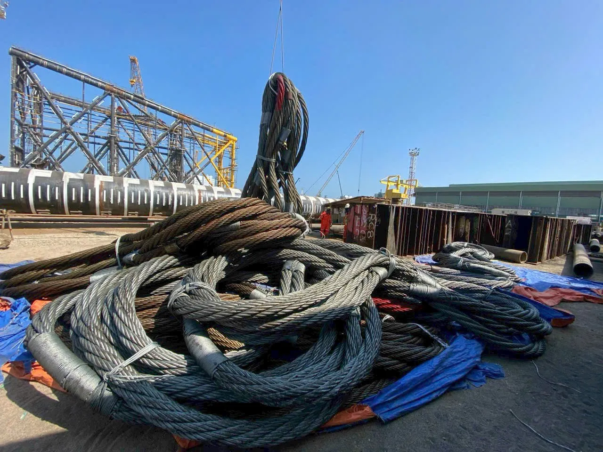
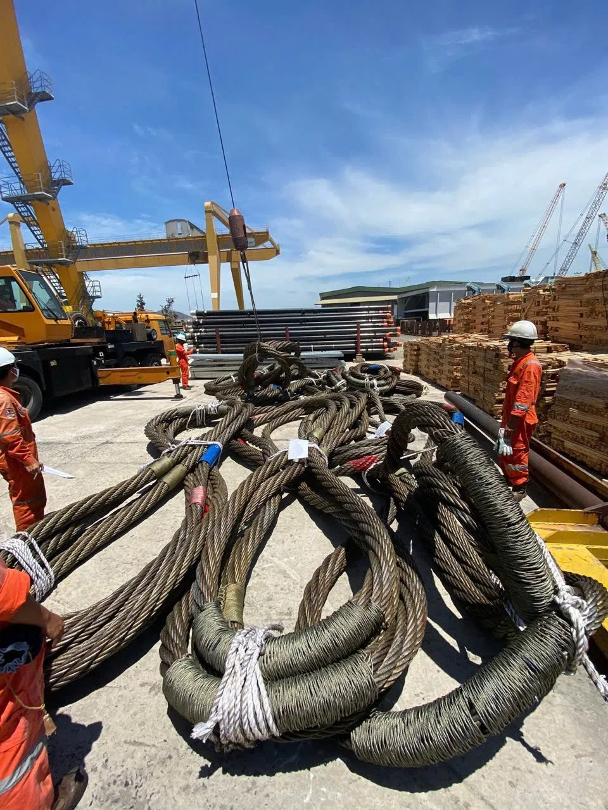

Sling bấm chì (ferrule-secured)
Đầu cáp tạo mắt và ép ống nhôm hoặc ống thép bằng máy ép thủy lực. Tiêu chuẩn tham chiếu EN 13411-3.

Wire rope sling · Grommet · Cable laid
Thiết kế – chế tạo – thử tải sling cáp thép cho nâng hạ thông thường đến các chiến dịch heavy lifting offshore. Đầy đủ thẻ WLL và chứng chỉ thử tải.
Wire rope slings

Amos Việt Nam thiết kế, chế tạo và thử tải các loại cáp cẩu (wire rope sling) phục vụ nâng hạ tại cảng biển, nhà máy, công trường đóng tàu và các chiến dịch heavy lifting offshore cho ngành dầu khí.
Sling được chế tạo từ cáp thép chất lượng cao, đầu cáp bấm ống (ferrule) hoặc tết tay, kết hợp với ma ní, vòng khuyên (master link), móc cẩu theo cấu hình yêu cầu. Mỗi sling đều có thẻ nhận dạng và chứng chỉ thử tải.
Phân loại
Đầu cáp tạo mắt và ép ống nhôm hoặc ống thép bằng máy ép thủy lực. Tiêu chuẩn tham chiếu EN 13411-3.

Mắt cáp được tết thủ công, phù hợp sling đường kính lớn, cần độ mềm ở đầu cáp. Tham chiếu EN 13411-2.
Bện từ 6 cáp thép quanh một lõi cáp, chịu tải rất lớn, dùng cho lifting package của kết cấu nặng.

Vòng cáp liền không mối nối, hiệu suất cao, dùng trên móc lớn và ma ní lớn trong heavy lift.
Hệ số theo cách móc
Bảng dưới minh họa tải trọng làm việc (WLL, tấn) của sling theo cách móc, tính từ WLL của một nhánh sling móc thẳng với các hệ số theo phương pháp tải đồng đều (EN 13414-1). Góc β là góc giữa nhánh sling và phương thẳng đứng.
| 1 nhánh | 2 nhánh | 3 – 4 nhánh | |||||
|---|---|---|---|---|---|---|---|
| WLL 1 nhánh thẳng (t) | Thẳng ×1,0 | Thắt nút ×0,8 | Vòng (basket) ×2,0 | β 0–45° ×1,4 | β 45–60° ×1,0 | β 0–45° ×2,1 | β 45–60° ×1,5 |
| 1 | 1 | 0.8 | 2 | 1.4 | 1 | 2.1 | 1.5 |
| 2 | 2 | 1.6 | 4 | 2.8 | 2 | 4.2 | 3 |
| 5 | 5 | 4 | 10 | 7 | 5 | 10.5 | 7.5 |
| 10 | 10 | 8 | 20 | 14 | 10 | 21 | 15 |
| 20 | 20 | 16 | 40 | 28 | 20 | 42 | 30 |
| 50 | 50 | 40 | 100 | 70 | 50 | 105 | 75 |
Không sử dụng sling với góc β lớn hơn 60°. Giá trị thực tế áp dụng theo thẻ WLL và chứng chỉ của từng sling.
Dự án heavy lifting



Sản phẩm liên quan
Câu hỏi thường gặp